Tổng quan "Gia Định xưa"
📍 Đồng Nai giữ vị trí quan trọng trong vùng kinh tế phía Nam.
📜 Năm 1698, Nguyễn Hữu Cảnh xác lập vùng đất Gia Định.
🌾 Văn hóa miệt vườn, lịch sử hơn 300 năm.
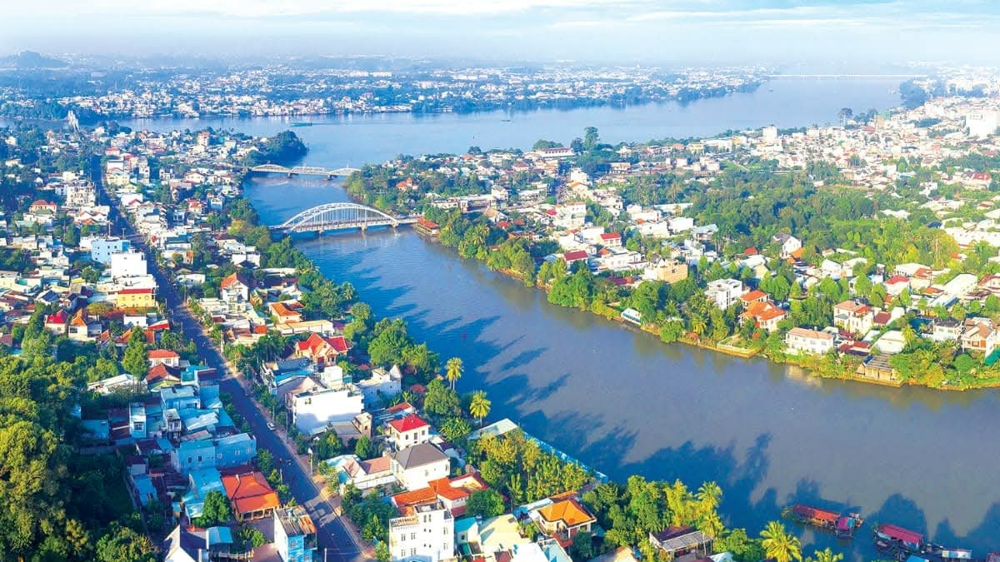


📍 Đồng Nai giữ vị trí quan trọng trong vùng kinh tế phía Nam.
📜 Năm 1698, Nguyễn Hữu Cảnh xác lập vùng đất Gia Định.
🌾 Văn hóa miệt vườn, lịch sử hơn 300 năm.



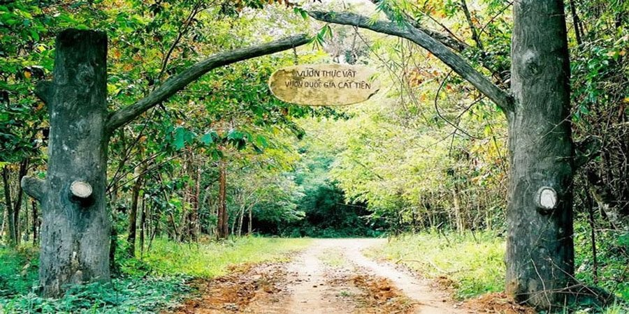


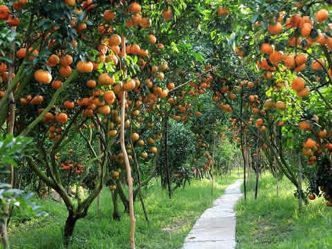
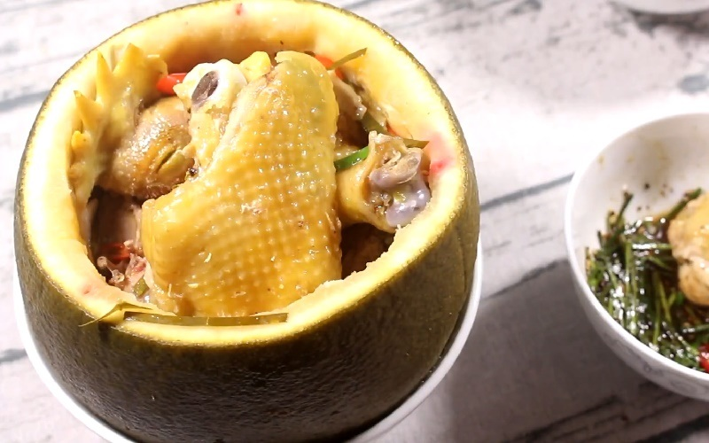
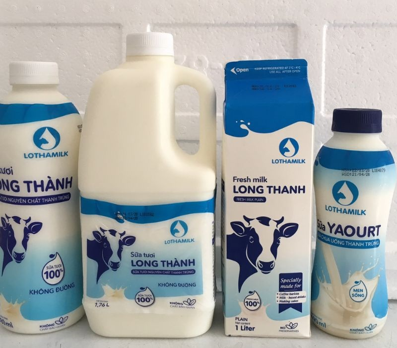
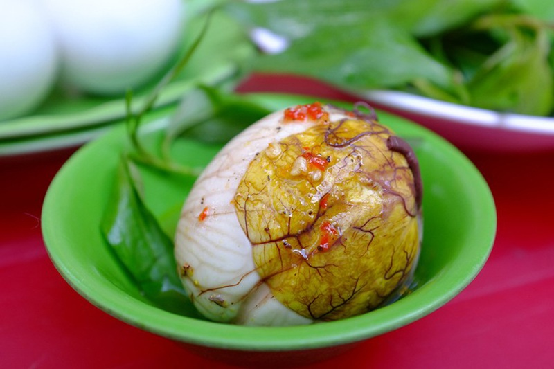
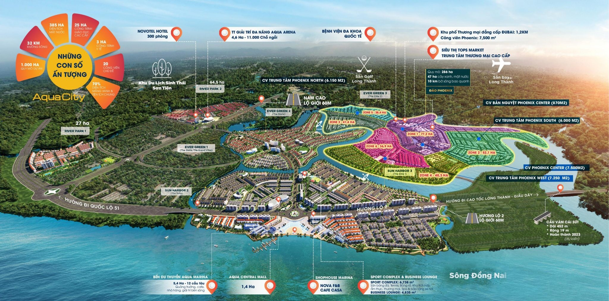
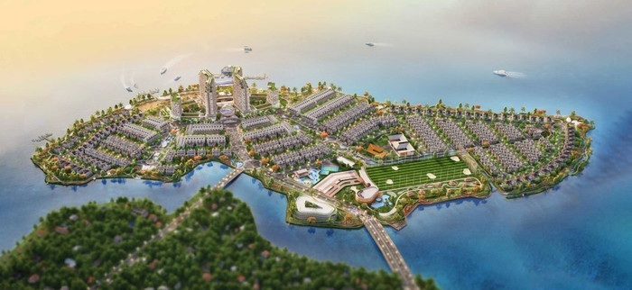
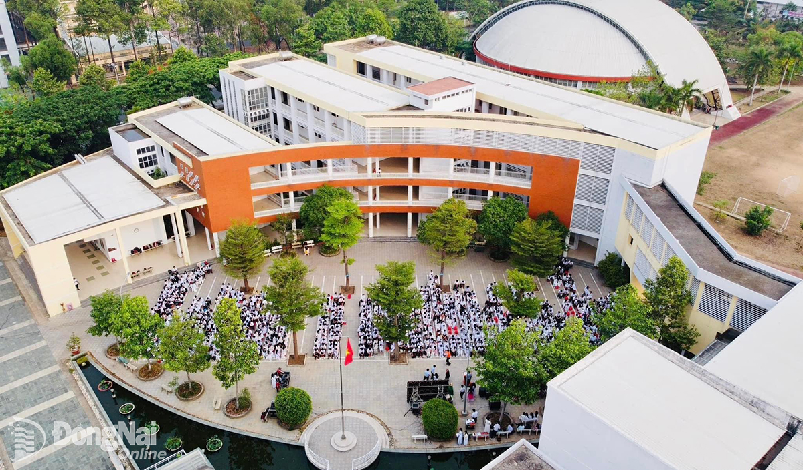
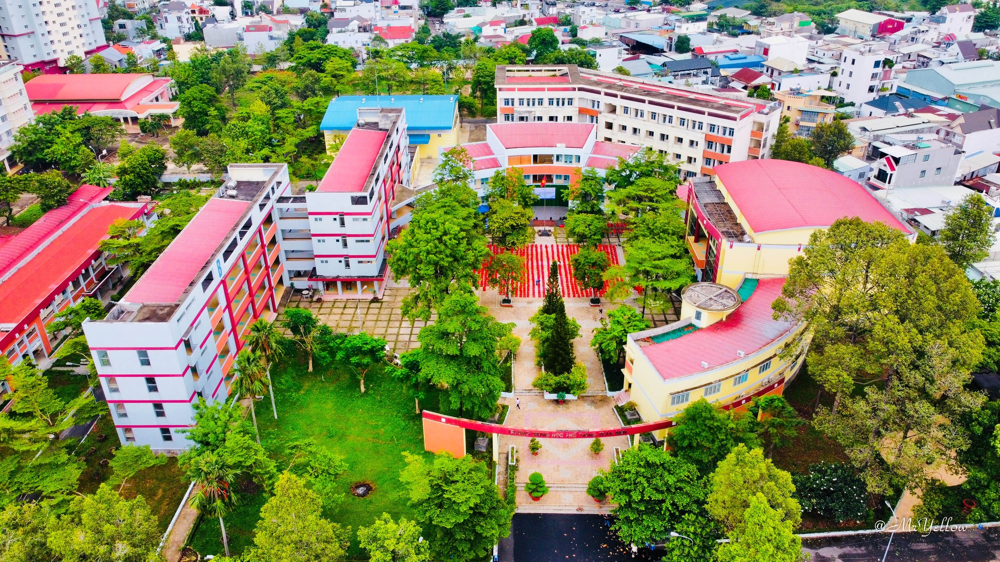
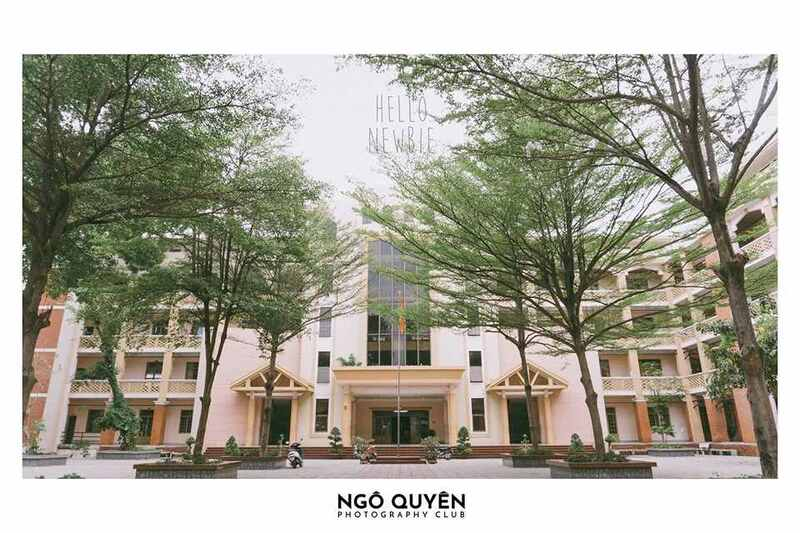
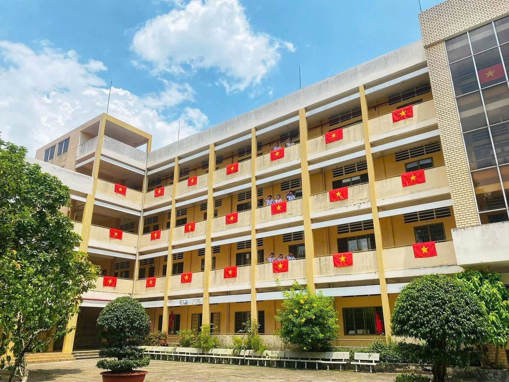